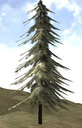
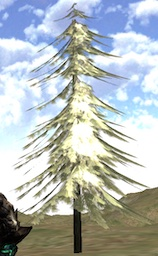

emenninga
Using a tree model where each bough is a simple billboard with a png texture of a bough. (DiffAlpha technique)
Specifically this
free model
.
The tree looks good from one side, but the other side is glowing. I could post my material, but it is very basic. What should I be looking for? (metallic = 0, setting cull to none glowed from all sides)
Thanks

